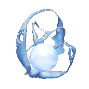
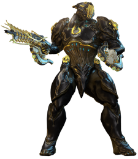
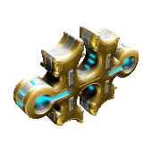

Relics
Relics are an essential resource for improving your Arsenal, opening them is an important activity for many players!
Resources Obtained

- Void Traces for:
- refining other relics (increases rare drop chances)
- crafting your Corrupted Keys for farming corrupted mods
- your maximum limit of Void Traces depends on your Mastery Rank
- think about spending your traces (Void keys, relic refinement) before reaching max, they are not stored beyond your maximum limit, they will be lost if you reach the cap

- Prime equipment blueprints, more powerful and rare:
- keep the ones you're interested in
- duplicates, surplus:
- convert them to ducats at Baro, buy prime mods & others
- sell them for Platinum, preferably in full sets (ex: all 4 parts of a frame in one sale)

- Forma blueprints:
- must be crafted every 24h
- will allow you to boost your gear by giving more mod slots: you will never have enough, always have a Forma in Foundry. Use companion app if needed
Relic Opening Strategy
- make a relic rush frame (Gauss, Titania + helminth gauss, Volt or other)
- use AlecaFrame if you're on PC to better understand relic drop values and manage your sales
- favor fast runs (capture, extermination) and Void (relic drop bonus): Hepit, Ukko, Oxomoco, Teshub
- fast relic drop:
- Lith: Hepit in Void
- Meso / Neo: Ukko in Void
- Axi: Apollo on Lua
- find relic groups:
- the Burner discord (see content/Discord)
- the public channel for opening relics in groups (game in English, EU or US servers)
- think about never being capped in Void Traces (level/radiant a continuous stock), otherwise new trace/reactant drops will be lost
Obtaining Relics
- Common Sources:
- Spy
- endless missions (defense, survival, disruption, excavation, etc...)
- any mission in the Void
- Fastest Sources:
- Lith: Hepit in Void
- Meso / Neo: Ukko in Void
- Axi: Apollo on Lua
- Relic Packs:
You can buy from certain syndicates random packs of 3 relics, very good source. Reputation can be saved for new prime frame releases.
- base syndicates
- open-world syndicates
- Teshin's relay shop (Steel Path - Steel Essence)
Rarity
Use the page of primes not yet vaulted: relics containing them are considered common, unless very recent release. Some relics are more interesting than others, a mix between rarity and popularity of prime parts:
- new prime frame: the arrival of a new prime frame greatly increases prices especially in the first hours/days/weeks, price will drop as rarity decreases.
- think about leveling syndicates in advance to buy relics at new frame release
-
Vaulted Prime parts
- wiki Prime Vault page
- there is only a limited quantity of frames and prime weapons available at a time, unavailable ones increase in price as they are rare
- each time a new prime releases, an older one is vaulted. Current rotation consists of 7 non-vaulted prime warframes (and their weapons/sentinels)
- consult the unvaulting page to see "common" relics at the moment
-
2 sources of vaulted relics
- own an old relic dropped when a frame/weapon was accessible in the past
- spend Aya to buy from Prime Resurgence shop:
- quick access Aya shop: orbiter > market > dropdown menu top left > second-to-last option "Prime Resurgence", sort by relics
- earning Aya:
- roughly same sources as relics
- bounties in open-world, more or less profitable, including 2 methods in particular:
- Brute Force on Deimos (most accessible), do solo or in duo (some objectives become too long with 3-4 players)
- Opti Bounties on Cetus (more profitable but inaccessible for new players, reserve for groups for later)
Opening
Method: How to do it
2 types of farming:
- pure pick-up / random: open random relics without making a group in advance
- benefits from randomly getting ally drops
- allows you to increase your Void Trace stock to level up your "good" relics
- favor fast missions (capture, extermination, sabotage)
- organized group farming where everyone brings the same relic to increase specific drop chances
- go through a community discord
-
go through the in-game recruitment channel
- set the game to English (more people) via the launcher
- set parameters for US servers (more people)
- use the recruitment channel
- click on the magnifying glass at the top left of the channel: sort by relic names you're interested in (reduces spam)
- use in-game object links (open brackets [ ], start typing the name, use auto-complete)
- avoid flawless relics due to low volume available (use intact for bronze loots, radiant for silver/gold loots)
- message types:
- H [Relic Axi V8] 2/4 rad: means Host (host/create a group) for Axi V8 relic, already 2 players out of 4, radiant relic for all ==> send him a message "+1" / "inv" to be invited
- L [Relic Axi V8] or LF [Relic Axi V8]: means L looking for group, player alone looking for a group. Sometimes you can be contacted to create a group when sending this kind of message
- think about keeping the menu open (escape) to keep an eye at the top left on equipped relics and be sure everyone has the right relic (and intact/radiant for all as appropriate), otherwise remake the group
Best Spots
Favor maps for their speed and/or ability to combine other farms:
Lith Fissure: Bifrost Echo, Venus Proxima (Railjack)
Advantages:
- you can invite players as soon as they have an Archwing (Mars junction quest)
- Lith relic drops (+ pseudo-vault Nyx/Valkyr)
- rare resource drops (Orokin Cells, Tellurium)
- high credit drops (relative to game level)
- Athodai drops
Strategy:
- send a player to the "white dot" indicating a wreck (requires rank 5 in Piloting Intrinsics to see it) with a hack at the end of a corridor (bonus loot Athodai & Nyx/Valkyr relics)
- do the very short Railjack part (destroy enemy ship with main cannon)
- park facing / slightly above the ship entrance (easy access for all)
- rush the extermination (AoE + fast movement, ex: Titania helminth gauss)
- everyone must gather near the exit door (to validate mission end)
- return to Railjack
- avoid using Archwing
- use Form Up to tp the whole group
- use Omni (consumable wheel, auto-equipped in Railjack) to tp solo (requires Rank 4 in Tactical Intrinsics)
Requiem Fissure: Pago - Kuva Spy
- follow build and strategy explained in this GazTTV video
- high drop rate of 60/60 mods
- high-level spy: guaranteed Meso/Neo drops
- opening Requiem relics:
- Requiem mod drops
- refine to Flawless (50 traces) for optimization
Axi/Neo Fissure: capture/extermination in Void (Hepit, Ukko, Oxomoco, Teshub)
- fast & easy missions
- wide corridors
- clean design: fast loading
- each golden orb gives energy to your Prime frames
- offers a relic at the end of each mission
- Hepit, Teshub: Lith relic
- Ukko, Oxomoco: Meso / Neo relic
- popular missions: more players to advance fast and share drops